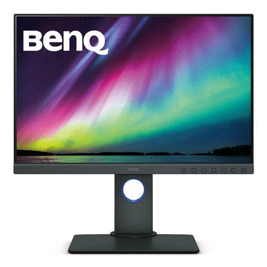
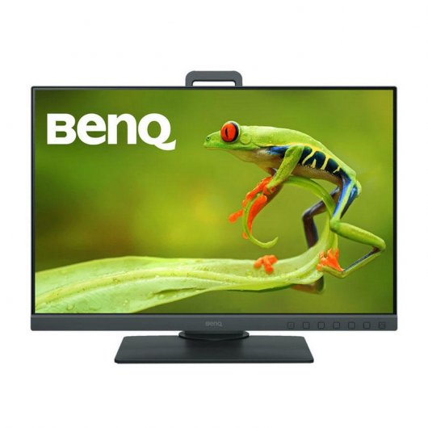
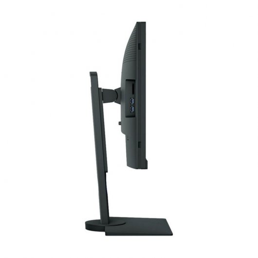
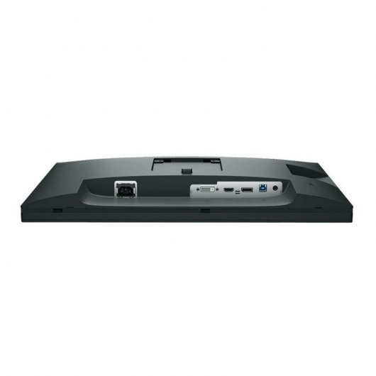
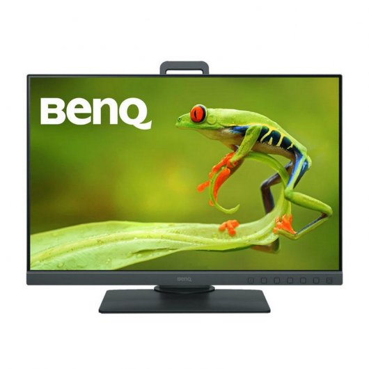
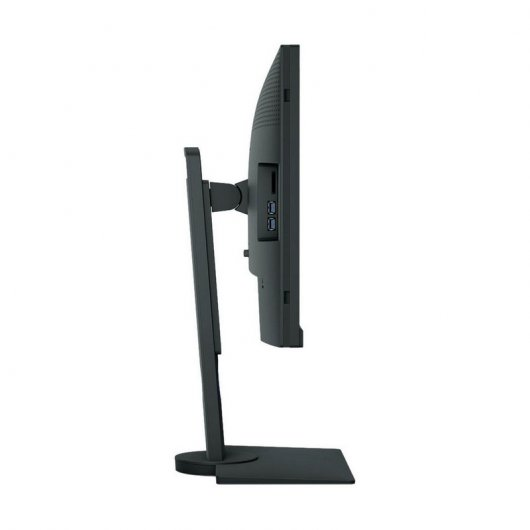
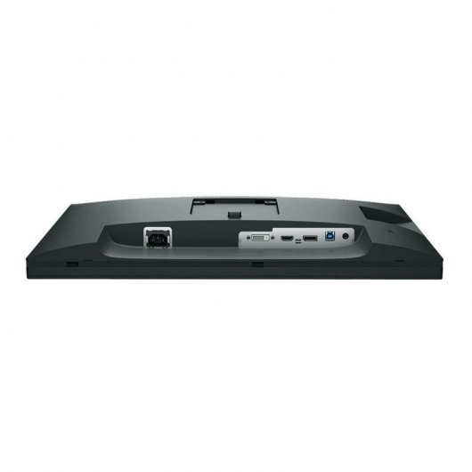

FUTURETECH STORE |

 





|
BenQ SW240 24.1" IPS
356€
El monitor Benq SW240 photovalue de 24.1 pulgadas integra la tecnología aqcolor para ofrecer un 99 % de cobertura adobe rgb, 100 % de SRGB, 100 % rec. 709 y un espacio de color 95 % dci-p3 con el fin de proporcionar una amplia gama de colores precisos. La relación de pantalla 16:10 ofrece un espacio extra para mostrar dos páginas tamaño a4 al completo y paletas de herramientas en pantalla. Además, el monitor SW240 está equipado con un acceso rápido exclusivo al modo de color, que permite a los usuarios cambiar rápidamente entre 3 modos preestablecidos.
Características
Tecnología aqcolor: 99 % de cobertura adobe rgb, admite calibración de hardware para obtener colores precisos en fotografía.
24.1 pulgadas, 16:10, resolución 1920 x 1200: la relación de pantalla es perfecta para que los fotógrafos profesionales comparen dos páginas tamaño a4 en la pantalla.
Calibración de hardware con el software palette master element: afine y mantenga el rendimiento del color del monitor en el estado más óptimo.
Acceso rápido al modo de color: cambie rápidamente entre los 3 modos de color preestablecidos sin tener que pulsar otros botones en pantalla.
Especificaciones
Exhibición
Diagonal de la pantalla: 61,2 cm (24.1")
Brillo de pantalla: 250 cd / m²
Resolución de la pantalla: 1920 x 1080 Pixeles
Tiempo de respuesta: 5 ms
Pantalla: LED
Tipo HD: Full HD
Tecnología de visualización: IPS
Formatos gráficos soportados: 1920 x 1080 (HD 1080)
Razón de contraste (típica): 1000:1
Ángulo de visión, horizontal: 178°
Ángulo de visión, vertical: 178°
Número de colores de la pantalla: 1.073 billones de colores
Relación de aspecto nativa: 16:10
3D: No
Relación de contraste (dinámico): 20000000:1
Diagonal de pantalla: 61,21 cm
Intervalo de escaneado horizontal: 30 - 83 kHz
Intervalo de escaneado vertical: 50 - 76 Hz
Forma de la pantalla: Plana
Puertos e Interfaces
Conector USB incorporado: Si
Puerto DVI: Si
Número de puertos HDMI: 1
Versión de conector USB: USB 3.0 (3.1 Gen 1)
Número de puertos ascendentes: 1
Cantidad de puertos USB descendentes de tipo A: 2
Cantidad de DisplayPorts: 1
Salidas para auriculares: 1
Auriculares: 3,5 mm
Peso y dimensiones
Peso: 6,7 kg
Ancho del dispositivo (con soporte): 543,5 mm
Profundidad dispositivo (con soporte): 230,7 mm
Altura del dispositivo (con soporte): 428,5 mm
Control de energía
Consumo de energía (inactivo): 0,5 W
Consumo energético: 16 W
Consumo de energía anual: 23 kWh
Clase de eficiencia de energía: A+
Voltaje de entrada AC: 90 - 264
Frecuencia de entrada AC: 47 - 63
Condiciones ambientales
Intervalo de temperatura operativa: 5 - 40 °C
Intervalo de temperatura de almacenaje: -20 - 60 °C
Intervalo de humedad relativa para funcionamiento: 20 - 90%
Intervalo de humedad relativa durante almacenaje: 10 - 90%
Aprobaciones reguladoras
Certificación: CE
Ergonomía
Ranura para cable de seguridad: Si
montaje VESA: Si
Ajustes de altura: Si
Interruptor de encendido/apagado integrado: Si
Tipo de ranura de bloqueo del cable: Kensington
Interfaces de montaje VESA: 100 x 100 mm
Giratorio: Si
Ángulo de giro (alcance): -45 - 45°
Ajuste de la inclinación: Si
Ángulo de inclinación: -5 - 20°
Ajuste de altura: 14 cm
Exhibición en pantalla (OSD): Si
Eje: Si
Cliente fino / Thin Client
Cliente delgado instalado: No
Contenido del embalaje
Cables incluidos: Corriente alterna, DVI, USB
Guía de configuración rápida: Si
Diseño
Posicionamiento de mercado: Home & Office
Color del producto: Gris
Desempeño
NVIDIA G-SYNC: No
AMD FreeSync: No
Tarjeta de lectura integrada: Si
Tarjetas de memoria compatibles: SD,SDHC,SDXC
Multimedia
Cámara incorporada: No
|


{kind=link}
{kind=link}
{kind=link}